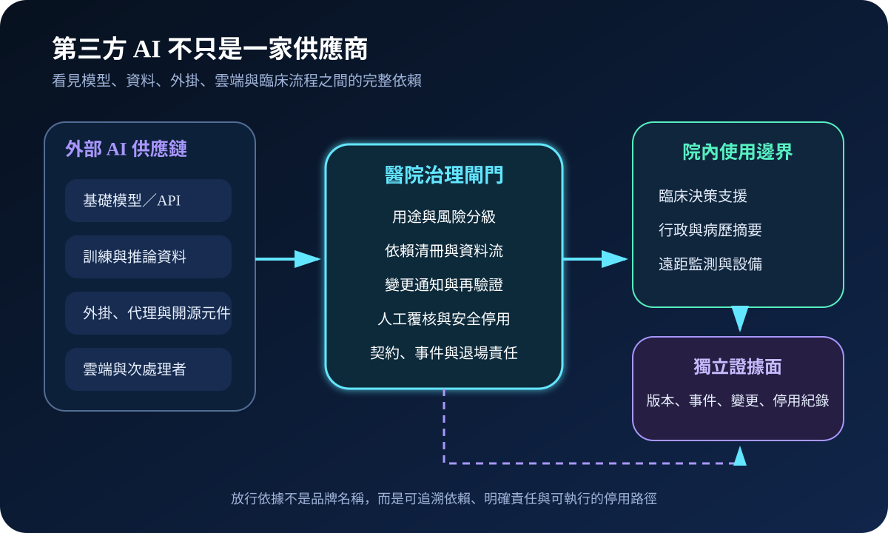
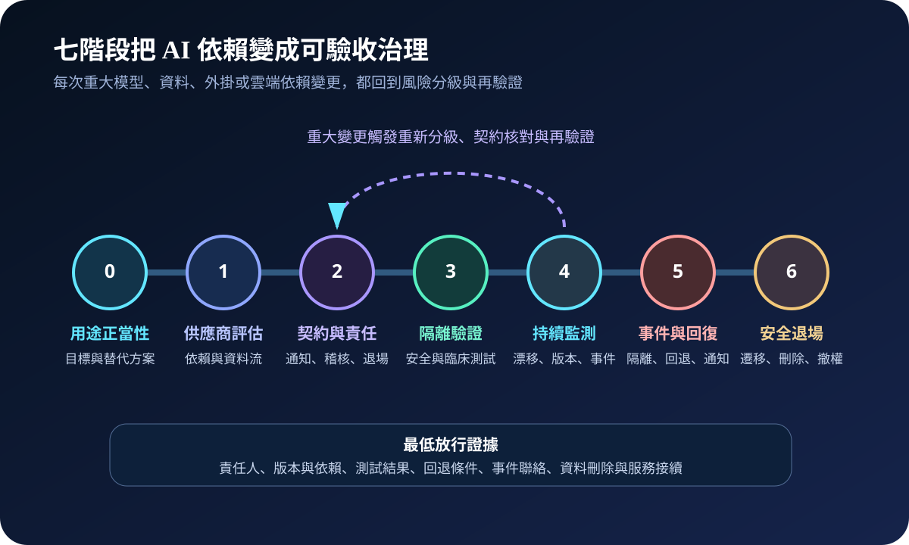
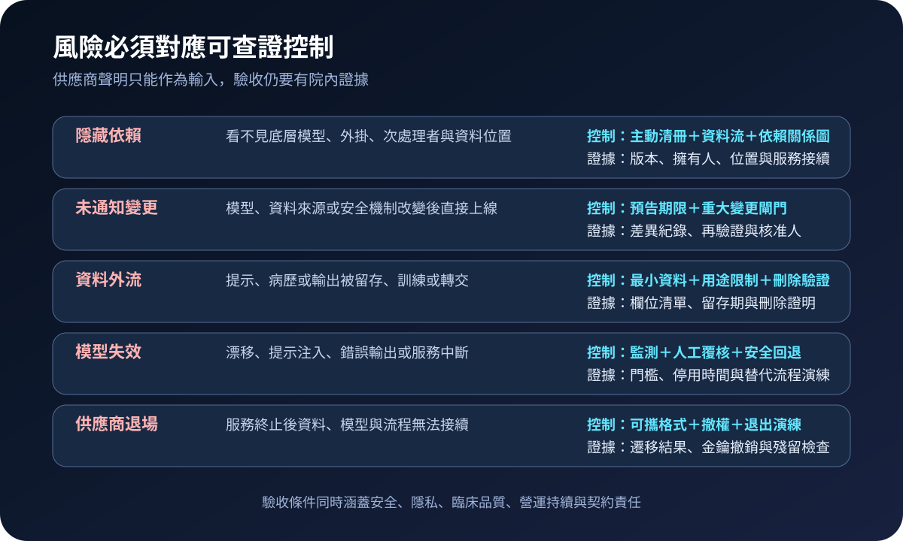

醫療資安國際觀察 · 2026-11-01
醫療第三方 AI 如何看見隱藏依賴：從模型供應鏈到可安全停用
作者：Dr. William｜醫療資訊與資安治理實務工作者
醫院採購的 AI 服務可能同時依賴基礎模型、開源元件、外掛、雲端與次處理者；若只登錄直接供應商，事件隔離、版本回退與資料刪除都可能失去可執行邊界。
名詞解釋：第三方 AI 供應鏈包含什麼
第三方 AI是由院外組織提供或維運的模型、系統與服務；供應鏈透明是能識別模型、資料來源、外掛、託管位置、次處理者及其責任；模型清冊則把用途、版本、擁有人、資料類型、風險層級、監測門檻與停用方式放在同一治理紀錄。清冊必須隨變更更新，不能只在採購時建立一次。
國際現況與適用邊界
美國醫療與公共衛生部門協調委員會於 2026 年 4 月發布第三方 AI 風險與供應鏈透明指引，提出從用途評估、供應商盡職調查、契約、導入、監測、事件回復到退場的生命週期。NIST SP 800-218A 則把安全開發責任延伸到模型生產者、AI 系統生產者與採購者，強調共同責任、來源完整性與開發環境監測。兩者屬美國部門實務與技術指引，不能直接視為台灣醫療機構的法定義務。
台灣適用原則：可將國際指引轉成院內採購、資訊安全、醫療品質、隱私與營運持續的共同驗收問題；法令與通報義務仍依台灣主管機關、契約及實際資料處理情境判定。
規劃：先建立依賴與責任矩陣
範圍至少涵蓋直接供應商、底層模型、資料來源、外掛工具、託管區域、次處理者、身分權限與輸出用途。資訊、資安、醫療品質、法務、採購、隱私與臨床單位共同指定服務擁有人。驗收指標可包含高風險 AI 清冊完整率、重大變更預告覆蓋率、再驗證完成時間、供應商事件聯絡測試成功率、安全停用時間及退場資料刪除證明完成率。
實作：七階段形成閉環
- 用途正當性：確認臨床或營運目標、替代方案與可接受風險。
- 供應商評估：取得模型、資料、外掛、次處理者與安全開發證據。
- 契約固化：明定變更通知、事件時限、稽核權、資料用途、再驗證與退出責任。
- 隔離驗證：在非正式環境測試提示注入、錯誤輸出、權限、日誌、回退與臨床流程。
- 持續監測：追蹤版本、漂移、異常行為、效能及資料流變化。
- 事件回復：可快速隔離外部連線、切回人工或替代流程並保存證據。
- 安全退場：完成資料遷移、權限撤銷、金鑰輪替、殘留檢查與服務接續。

風險：透明度不足會放大臨床與營運衝擊
常見失敗包括底層模型被替換卻未通知、提示或病歷被用於額外訓練、次處理者事件無法同步、供應商中斷時沒有人工替代，以及退場後資料與金鑰仍殘留。緩解方式不是要求一次性文件，而是把依賴清冊、通知時限、最小資料、持續監測、回退演練及刪除證明寫入可重複驗收流程。

可執行清單
- 每項高風險 AI 是否可追溯到底層模型、外掛、資料位置與次處理者？
- 供應商是否必須在重大變更前通知，並提供差異與再驗證資料？
- 院方資料是否被限制於核准用途、留存期間與處理地點？
- 異常輸出、服務中斷或外部事件時，能否在目標時間內安全停用？
- 人工替代、版本回退、事件聯絡與證據保存是否完成演練？
- 契約終止後是否能驗證資料刪除、權限撤銷、金鑰輪替與服務接續？
來源
- Health Sector Coordinating Council Cybersecurity Working Group｜Third-Party AI Risk and Supply Chain Transparency Guide（發布：2026-04；查閱：2026-11-01）
- NIST｜SP 800-218A Secure Software Development Practices for Generative AI and Dual-Use Foundation Models（發布：2024-07；查閱：2026-11-01）
- HHS Office of Inspector General｜Audit of HHS Governance of Artificial Intelligence（列入工作計畫：2026-07；查閱：2026-11-01）
內容說明
本文依健康台灣深耕計畫相關治理內容整理，並參考 HSCC 醫療第三方 AI 指引與 NIST 安全開發框架，說明供應鏈透明、共同責任、變更再驗證及安全退場；不把美國部門指引視為台灣法定義務，也不取代主管機關公告、院內風險評估、醫療品質程序、契約審查或法律意見。